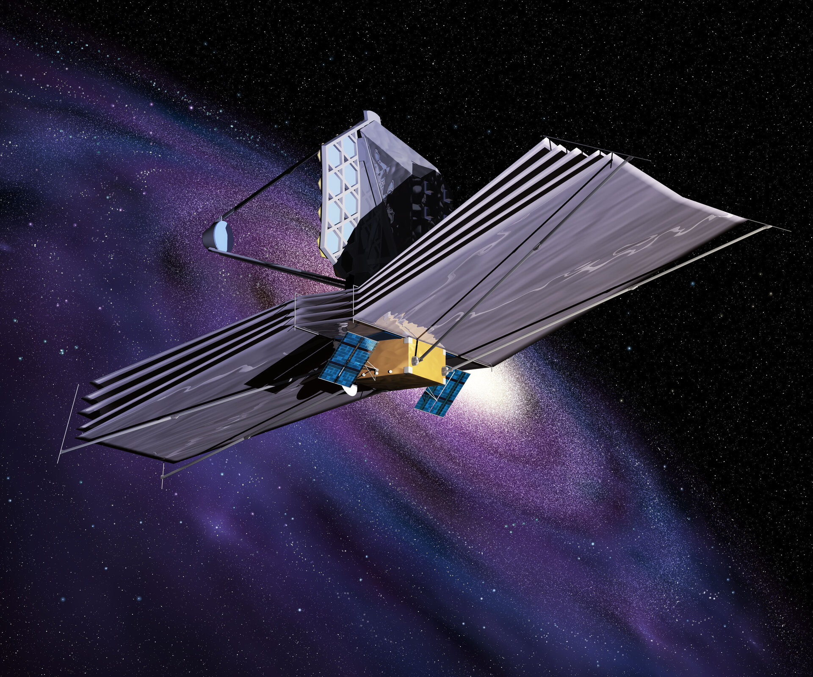

James Webb Space Telescope aims to look for light from the first stars and galaxies that formed in the universe.
The James Webb Space Telescope (JWST) is a space telescope currently conducting infrared astronomy. As the largest optical telescope in space, it is equipped with high-resolution and high-sensitivity instruments, allowing it to view objects too old, distant, or faint for the Hubble Space Telescope. This enables investigations across many fields of astronomy and cosmology, such as observation of the first stars, the formation of the first galaxies, and detailed atmospheric characterization of potentially habitable exoplanets.
The U.S. National Aeronautics and Space Administration (NASA) led JWST's design and development and partnered with two main agencies: the European Space Agency (ESA) and the Canadian Space Agency (CSA). The NASA Goddard Space Flight Center (GSFC) in Maryland managed telescope development, while the Space Telescope Science Institute in Baltimore on the Homewood Campus of Johns Hopkins University currently operates JWST. The primary contractor for the project was Northrop Grumman. The telescope is named after James E. Webb, who was the administrator of NASA from 1961 to 1968 during the Mercury, Gemini, and Apollo programs.
The James Webb Space Telescope was launched on 25 December 2021 on an Ariane 5 rocket from Kourou, French Guiana, and arrived at the Sun–Earth L2 Lagrange point in January 2022. The first JWST image was released to the public via a press conference on 11 July 2022.
JWST's primary mirror consists of 18 hexagonal mirror segments made of gold-plated beryllium, which combined create a 6.5-meter-diameter (21 ft) mirror, compared with Hubble's 2.4 m (7 ft 10 in). This gives JWST a light-collecting area of about 25 square meters, about six times that of Hubble. Unlike Hubble, which observes in the near ultraviolet and visible (0.1 to 0.8 μm), and near infrared (0.8–2.5 μm) spectra, JWST observes a lower frequency range, from long-wavelength visible light (red) through mid-infrared (0.6–28.3 μm). The telescope must be kept extremely cold, below 50 K (−223 °C; −370 °F), such that the infrared light emitted by the telescope itself does not interfere with the collected light. It is deployed in a solar orbit near the Sun–Earth L2 Lagrange point, about 1.5 million kilometers (930,000 mi) from Earth, where its five-layer sunshield protects it from warming by the Sun, Earth, and Moon.
{kind=link}